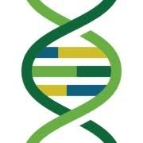

CV
Research Interests
I am interested in leveraging high-throughput biological data to understand neurological disorders and chronic disease. Specifically, I am currently researching how sex and developmental stage affect multi-omics profiles of Autism Spectrum Disorder (ASD). Additionally, I am creating new methods to characterize the relationship between exposure, health outcomes, and multi-omics signatures.
Skills
Software
- R/RShiny
- Python
- Linux
- HPC/SLURM
- HTML/CSS
- Version Control/Git/Docker
Domain Knowledge
- Bioinformatics
- Toxicology
- Neuroimmunology
- Pharmacology
Data Analysis
- Single-cell/nuclei RNA-seq, Spatial transcriptomics
- Bulk Methods: RNA-seq, Methylation, Proteomics, Metabolomics
- Quality Control
- Exploratory Data Analysis
- Machine Learning/Artificial Intelligence
- Statistical Modeling
- Pipeline Development
Professional Experience
PhD Candidate, Toxicology, Physiology, and Molecular Mechanisms
Johns Hopkins Bloomberg School of Public Health · Full-time
Sep 2023 – Present · Baltimore, MD
- Research neurodevelopmental and chronic conditions using multi-omics data
- Assist in teaching classes at the Bloomberg School of Public Health
- Complete coursework in toxicology, pharmacology, and molecular biology
Bioinformatics Scientist
Tufts University
Jan 2022 – Sep 2023 · 1 yr 9 mos
- Develop omics data workflows and curate reference data to support bioinformatics research on Tufts HPC and Galaxy Server
- Consult on bioinformatics projects and provide input on workflow design and optimization
- Develop and lead omics data analysis and visualization seminars
Clinical Bioinformatics Analyst
Foundation Medicine · Full-time
Jan 2021 – Dec 2021 · 1 yr
- Lead team to develop R package / Shiny app for analysis and visualization
- Analyze clinical oncology NGS data and annotate genomic aberrations to inform oncologists of actionable drug targets
- Implement and design SQL queries to obtain relevant data
- Collaborate in cross-disciplinary teams to complete projects and implement process improvements
Histology Systems Specialist
Foundation Medicine · Full-time
Jul 2020 – Jan 2021 · 7 mos · Cambridge, MA
- Develop and analyze performance metrics for Histology team using R, Python, and Power BI
- Test and improve technology products to meet evolving workflow needs
- Update and revise SOPs to reflect changes in lab processes
Histotechnologist
Foundation Medicine
Oct 2018 – Jul 2020 · 1 yr 10 mos · Cambridge, MA
- Operated in CLIA/CAP environment with pathologists to assess tumor composition of cancer patient samples
- Performed validation of new processes and updated SOPs
Pathology Technician II
Covance
Jun 2016 – Aug 2018 · 2 yrs 3 mos · Madison, WI
- Assisted pathologists in assessing efficacy of new medical therapies via tissue preparation
- Identified and resolved issues in documentation, GLP/SOP compliance, and process improvements
Teaching Experience
Molecular Toxicology Teaching Assistant
Johns Hopkins University
2024/2025
- Assisted with lectures and grading of assignents.
Introduction To Risk Sciences Teaching Assistant
Johns Hopkins University
2024
- Assisted with lectures and grading of assignents.
Introduction to Bioinformatics - Recurring Guest Lecturer
Tufts University
2022/2023
- Lectured on the principles of RNA-seq, and led a live workshop on how to analyze RNA-seq data.
Protein Engineering Course - Recurring Guest Lecturer
Tufts University
2022/2023
- Lectured on the background and use of AlphaFold in protein engineering research and led a live workshop on how to use AlphaFold.
Introduction To 16S Metabarcoding
Tufts University
2022
- Lectured on 16S Metabarcoding data analysis to profile microbial communities and led a live workshop on how to analyze microbiome data.

Animal Histology Teaching Assistant
Binghamton University
2015
- Taught students about tissue composition, lesion formation, and tissue identification under microscope
- Proctored exams and supported laboratory preparation for classes
Education
PhD, Toxicology, Physiology, and Molecular Mechanisms
Johns Hopkins Bloomberg School of Public Health
Sep 2023 - May 2026
Master of Science - MS, Bioinformatics
Brandeis University
2019 - 2021

Bachelor’s degree, Biological Sciences
SUNY Binghamton
2013 - 2016
Memberships
Carpentries Instructor
The Carpentries
Issued Oct 2022

American Society of Human Genetics
Publications


Human neural organoid microphysiological systems show the building blocks necessary for basic learning and memory
Communications Biology · 2025-08-16 | Journal article
DOI: 10.1038/s42003-025-08632-5
Contributors: Dowlette-Mary Alam El Din; Leah Moenkemoeller; Alon Loeffler; Forough Habibollahi; Jack Schenkman; Amitav Mitra; Tjitse van der Molen; Lixuan Ding; Jason Laird; Maren Schenke et al.
Single Cell Transcriptomic Profiling of MYBPC3-Associated Hypertrophic Cardiomyopathy Across Species Reveals Conservation of Biological Process But Not Gene Expression
Journal of the American Heart Association · 2025-01-07 | Journal article
Contributors: Samia A. Ali; Gayani Perera; Jason Laird; Rebecca Batorsky; Martin S. Maron; Victor N. Rivas; Joshua A. Stern; Samantha Harris; Michael T. Chin
Network Analysis of Brain and Bone Tissue Transcripts Reveals Shared Molecular Mechanisms Underlying Alzheimer’s Disease and Related Dementias and Osteoporosis
The Journals of Gerontology, Series A: Biological Sciences and Medical Sciences · 2024-11-01 | Journal article
Contributors: Archana Nagarajan; Jason Laird; Obiadada Ugochukwu; Sjur Reppe; Kaare Gautvik; Ryan D Ross; David A Bennett; Clifford Rosen; Douglas P Kiel; Lenora A Higginbotham et al.
Human Neural Organoid Microphysiological Systems Show the Building Blocks Necessary for Basic Learning and Memory
Preprint · 2024-09-19
DOI: 10.1101/2024.09.17.613333
Contributors: Dowlette-Mary Alam El Din; Leah Moenkemoeller; Alon Loeffler; Forough Habibollahi; Jack Schenkman; Amitav Mitra; Tjitse van der Molen; Lixuan Ding; Jason Laird; Maren Schenke et al.
Protosequences in brain organoids model intrinsic brain states
Preprint · 2023-12-30
DOI: 10.1101/2023.12.29.573646
Contributors: Tjitse van der Molen; Alex Spaeth; Mattia Chini; Sebastian Hernandez; Gregory A. Kaurala; Hunter E. Schweiger; Cole Duncan; Sawyer McKenna; Jinghui Geng; Max Lim et al.; Jason Laird
Transcriptomic network analysis of brain and bone reveals shared molecular mechanisms underlying Alzheimer’s Disease and related dementias (ADRD) and Osteoporosis
Preprint · 2023-10-28
DOI: 10.1101/2023.10.26.559969
Contributors: Archana Nagarajan; Jason Laird; Obiadada Ugochukwu; Sjur Reppe; Kaare Gautvik; Ryan D. Ross; David A. Bennett; Clifford Rosen; Douglas P. Kiel; Lenora A. Higginbotham et al.
Spatial Transcriptomic Analysis of Focal and Normal Areas of Myocyte Disarray in Human Hypertrophic Cardiomyopathy
International Journal of Molecular Sciences · 2023-08-10 | Journal article
Contributors: Jason Laird; Gayani Perera; Rebecca Batorsky; Hongjie Wang; Knarik Arkun; Michael T. Chin
Abstract EC.09: Single Nuclei RNA Sequencing Analysis Of Mybpc-3-Associated HCM To Identify Common Pathological Mechanisms In Human, Feline, And Murine Hearts
Circulation Research · 2023-08-04 | Journal article
DOI: 10.1161/res.133.suppl_1.ec.09
Contributors: Samia Ali; Gayani Perera; Jason Laird; Rebecca Batorsky; Joshua A Stern; Samantha Harris; Michael T Chin
Continuous fish muscle cell line with capacity for myogenic and adipogenic-like phenotypes
Scientific Reports · 2023-03-29 | Journal article
DOI: 10.1038/s41598-023-31822-2
Contributors: Michael K. Saad; John S. K. Yuen; Connor M. Joyce; Xinxin Li; Taehwan Lim; Talia L. Wolfson; Justin Wu; Jason Laird; Sanjana Vissapragada; Olivia P. Calkins et al.
Altered intercellular communication in human hypertrophic cardiomyopathy inferred from single nuclei RNA-seq, Ligand-Receptor gene expression analysis and spatial transcriptomics
Journal of Molecular and Cellular Cardiology · 2022-12 | Journal article
DOI: 10.1016/j.yjmcc.2022.08.090
Contributors: Michael Chin; Christina Codden; Amy Larson; Gayani Perera; Jason Laird; Rebecca Batorsky; Junya Awata
Activating IGF1R hotspot non-frameshift insertions define a novel, potentially targetable molecular subtype of adenoid cystic carcinoma
Modern Pathology · 2022-11 | Journal article
DOI: 10.1038/s41379-022-01126-3
Contributors: Matthew Margolis; Tyler Janovitz; Jason Laird; Douglas A. Mata; Meagan Montesion; Jessica K. Lee; Russell W. Madison; Alexa B. Schrock; Hanna Tukachinsky; Justin M. Allen et al.
Personalized Perturbation Profiles Reveal Concordance between Autism Blood Transcriptome Datasets
Preprint · 2021-01-25
DOI: 10.1101/2021.01.25.427953
Contributors: Jason Laird; Alexandra Maertens